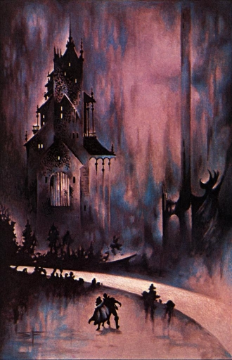

Noise (Part 1)
by
Elizabeth Counihan
I sat with my back to the night and strummed a lament on my cittern. The young woman approaching me had the appearance of a great lady of the upper cities. I smiled ingratiatingly, but she looked at me as if I had crawled out of the dark and wriggled under the Circle — maybe, to her, I had.
"Stop your noise, little man," she said, "and follow me."
Angered, I might have protested that her ears were at fault, not my music, but I did not. Although I guessed her to be as young as I was, that was where our similarity ended. She was rich. I was poor. I would follow her, I thought, for a few tokens. And so I did, and our world changed as I shall tell you.
She took me to a private place and we sat down away from the eyes and ears of others.
"I have heard that your citizens can help people with — unusual requests." I saw her hands clench, too late to conceal their trembling.
I answered, "I am not a citizen. I own no city and none owns me, as I'm sure you know. My allegiance is only to my Cousins and any of us will break your rules if it suits us. Is that what you want?"
She nodded and paused. Then she took a deep breath and asked, "Would you go Outside?"
"Are you mocking me, madam?" I said, "You must know that none of my people has ever left the Pyramid since we came here. We turn our backs to the night, never looking Out There." I was wasting my time.
"No, don't leave. I thought that would be your answer. Then, if you won't go, I must. Can you help me?"
"Your own laws forbid it," I answered softly. It seemed I was dealing with a madwoman.
"Now you are mocking me. Do you think I don't know that women are not permitted to leave this place? Do you think I haven't seen the flayed skins of the brave but foolish ones who dared to disobey?" she said bitterly. She had become very pale.
"This is no whim of mine," she went on. "I am in deadly earnest. Someone must do something. The danger is growing daily."
I shrugged. "There has always been danger and always will be until the end."
"Read the news slips; if you can read that is," she retorted. "When you have understood you may change your mind. I had thought that your people would help. You are not hidebound by rules and traditions as we are. I thought…"
She stopped and I saw that there were tears in her eyes, but she brushed them away with an angry gesture and got up.
Then she spoke in a low voice. "I am Beatrice. I am willing to die if my action can save us — even save you. If you change your mind ask for me at the thousand-and-fourth level; but don't repeat what I have said except if you can find another of the Little People to help me — one braver than you, coward and son of cowards." She turned her back on me and stalked in the direction of the lifts.
At first I was angry but the Little People are used to unkind words so I grumbled a little, then went back to my post, to play music and earn a few tokens. But my audience was less than I was used to. I looked at the crowds. They were different; smaller and quieter than usual. There was a steady drift towards the northern embrasures. It occurred to me that, wrapped up in my music-making, I had not been paying attention until now; that the crowds had been behaving oddly for several days. The danger is growing, Beatrice had said.
Suddenly chilled, I packed up my cittern and descended a hundred levels to where my friend Marly had his stand. I found him reading one of the news slips, unusually for our people. I asked him what was happening and he handed me the slip. It spoke of one Strega, of the Monstruwacans, a man naturally attuned to the evil vibrations from the Land. For some weeks he had experienced a malevolent force beating upon him; then a few days ago he had stopped speaking quite suddenly, but had continued to gaze Outside with a fixed and terrified expression. And now he had become unconscious and cold to the touch.
"They say that a great power of evil has penetrated the Circle and reached into the heart of our Refuge," my friend said.
"I thought that was impossible unless the earth current fails," I whispered.
"No, no. Of course it hasn't," Marly said. He made a wide gesture, encompassing the lights, the air pumps, the lifts — all dependent on the wonderful power of the earth that sustained us all. How then, I wanted to know, could any of the dreadful dangers from the Night Land affect those inside? But Marly did not know. Like all of us Cousins he had kept eyes and ears closed to all affairs Outside.
I left him there and followed the crowd. I stood at the embrasure with averted eyes. I heard the murmur of the people, questioning, frightened, some weeping. Then I heard a sound from Outside, one I had heard many times, and which even we Cousins could not avoid. It came through the loud speakers and was broadcast universally by the sound relays of the Redoubt. It was a low moan that rose to a howl of agony and triumph — the baying of one of the Night Hounds, but surely never so loud as today. Then another joined it in horrid dissonance. A woman in front of me sank to her knees sobbing, leaving her place at the spyglass.
On an impulse I stepped forward. I thought my chest would burst with the hammering of my heart as, for the first time in my life, I gazed full upon the Night Land.
At first I saw only blackness, a true darkness such as I had never seen even in the dim sleeping rooms of the Pyramid. My courage failed and I began to turn away until I remembered how Beatrice had called me "coward and son of cowards".
I looked again. There was a sullen light to the left of my field of vision and, as my eyes adjusted, it resolved into a steady, crimson glare. Then, slowly, I perceived a dark bulk poised above the light and I knew that I gazed upon the North-West Watcher lit from below by the Red Pit. I felt myself a traitor to my kin, and my eyes watered, but still I watched.
And I perceived all those terrors of the Night Land, so well-known to all but my people. I gazed upon the volcanoes and dark hills to the north and, remembering our history, swore to myself that the Cousins were not the sons of cowards but the children of the bravest of all people. I glimpsed dark, scuttling forms whose multi-faceted eyes glittered in the fitful light; other creeping shadows left a shining trail. At last my eyes came to rest on a clear, cold light; a distant beacon in the dark. The light was blue-white and unblinking. Though so far away, I fancied I saw lit windows, an open door. I felt a call across the void — a welcome.
A hand pulled at my sleeve and a voice said, "Do not look too long at that House unless you are accustomed to, or you will feel its power." The stranger, an elderly woman, smiled and drew me away. I thanked her and hurriedly left the window.
That night I dreamed of the House of Silence, for I knew that it was that most dreadful place that had called to me across the miles. In my dream I left the Great Refuge to wander, heedless of danger, into the Night Land. The laughter of the Land reverberated all around me, mocking me for a coward. I clapped my hands to my ears and ran towards peace and silence. The lighted windows of the House shone on me, the doors were open, the light a sanctuary. I threw down my cittern and entered.
Day after day I heard the murmurs of fear all about me. I had no more dreams but could not sleep, terrified that I should once more feel the call of that House. I could not eat. I tried to play my music with shaking fingers but the street crowds were in no mood for trivial melodies. The clamour of roars, howls and sinister laughter from Outside grew louder by the day.
One morning I heard the tolling of the funeral bell. People were weeping as they travelled the roadways. The Monstruwacan Strega had died. He had never spoken again nor woken from his coma.
"It is the House of Silence," I heard on all sides, "its power has broken through the Circle. The Earth Current cannot save us!"
I took the lift to level one-thousand-and-four.
The chief city there was known as the City of Studies, because it housed the greatest library and centre of research in the whole Redoubt to be found outside the Watchtower of the Monstruwacans.
I spent three days wandering and asking for the woman called "Beatrice", to curious and disdainful stares from the tall people of that city. I played a little, to polite applause, but did not sing — my breathing was oppressed by the thin air of those upper levels.
I found her in an obscure recess of the huge domed chamber that formed the Library of Ancient Science. She was seated at a translucent desk, of a material unfamiliar to me. I watched a while as she concentrated fiercely on a series of coloured lights that flashed in its milky depths. When I interrupted her, she greeted me with a smile. I told her that I had looked Outside, that I had felt the call of the House of Silence and was afraid.
"It takes courage to break the habit of a lifetime," she answered. As she turned towards me I noticed that the lights receded and that the table was now of a uniform milky appearance. I drew up a chair and asked what she wanted of me.
She brushed a hand over the desk, and the lights reappeared. "My fellow librarians consider this to be a toy for children, a mere curiosity from the most ancient times. But I have studied it for many years and, I think, have learned its true nature." She got up and indicated that I should take her place, which I did. She made me place my left hand in a depression at the side of the desk and immediately the milkiness was replaced by a bright display of purple and green. It was easy, she explained, to learn to change the colours at will — an amusing game at most. Then, replacing me once more, she demonstrated her own ability to make the colours form regular patterns; some of them resembling the pictograms of our own writings.
"The Ancients had wonderful instruments that could send messages, even pictures, across the void. We live by their great knowledge, now lost forever, or so we are told.
"Well, I don't think it is all lost. This 'toy' is, in reality, a great library, probably containing more knowledge than all the books in this room." She gestured towards the high, book-lined walls; the great, domed ceiling, with its pulleys and hanging baskets of scrolls, papers and yet more books.
"But to direct this machine one must use the power of the mind alone. It is hard to master and there is no one to teach me. Only I can read, like a stumbling child, its hidden messages. No one but me believes in this thing. The scholars and Monstruwacans ask who am I — a young woman of the nobility, a mere dilettante — to question their embalmed beliefs."
As she spoke to me, I once more thought, fleetingly, that she might be insane. But since feeling the power of that evil House, I felt that I was now truly awake, no longer living in a cosy dream of danger in the unimaginably distant future, but alert to the possibility of imminent catastrophe for our poor remnant of humanity in its besieged stronghold. For if an evil power had at last penetrated our Refuge, then surely, patiently, it would bring the last of the human race to destruction.
Beatrice fixed me with eager eyes. "This machine contains, among so much else, knowledge of some of the engines of destruction our most ancient forbears used against the monsters of the dark, so they preserved themselves as they built their greatest work, this Last Redoubt. But what interests me in particular are the defences they had made against what we would term Evil Powers, those which are considered to be a danger to the spirit — the life-force itself."
I replied, "We are taught that there is no defence other than that provided by the Earth Current and those Angelic Forces that have, at times, helped the bravest of those who venture outside.".
"Yes, all very holy and mystical, isn't it? In fact the help given by those Holy or Angelic Forces — call them what you like — is entirely random and has nothing to do with the bravery of the threatened traveller. Many thousands of valiant men have perished in the pursuit of selfless rescue operations while others have been protected. Assuredly there is no rational or just consciousness behind this."
Gently, I brought her back to our present situation and asked what she wanted me to do. She chided me for impatience and continued.
"The people of those days were so much hardier and braver than we are! Think how they fought their way down from the frozen surface of the world, for mile upon mile over the centuries, building the roads, fighting off the brutes and the Outer Terrors as the sun died and darkness gradually swallowed the earth. Think how many thousands must have perished in the fight as they built this Final Redoubt. And yet they did it, men, yes, and women too; and they succeeded, surely, because they had defences greater than any we know today. We are stagnating, rules and regulations…ancient superstitions." She tapped the glowing desk. "The answers are here! I already have enough information to reconstruct one of their defence devices. I have started making it — almost finished."
She leaned towards me, whispering, "You know I cannot leave by the usual gateway. You Little People trade in secrets. I want you to find a way for me to leave the Redoubt. I mean to go Outside and defy the power that threatens us."
"No one can defy the power of the House of Silence," I said.
"Because no one nowadays has the knowledge — except for me. And they do not believe me. So I must go alone," Beatrice answered.
I went to see Mother Dorinda, who was at that time the Eldest Cousin and keeper of our records. She sent me down to the Underground Fields below the Pyramid and there, at a certain farm, I met — a certain man. Even now I will not reveal his name or his location, nor those of the other Cousins I met later. Beatrice had, of course, given me a good supply of tokens to ease my way.
How I enjoyed the peace of that country during the five days it took me to discover what I needed. The meadows were full of the song of birds, the hum of bees. Coloured butterflies floated lazily in the warm air. The people who lived there, labouring in the fields under that golden light, lived and died without ever looking out at the Night Land. It seemed that the terrible news coming from the Monstruwacans' tower had not yet rocked their serene complacency.
I visited Beatrice secretly and told her what I knew and I saw how pale she was behind the red spots that glowed on her cheeks. She is afraid, I thought, but still determined to go.
On an impulse, I descended to the Hall of Honour and looked at the statue of that long ago Hero-in-broken-armour. I circled the statue, biting my nails and remembering that the people — my people — who had followed him out of the dark, had had no armour and no wondrous food and almost no weapons; and yet a few — a pitiful few, had defeated all dangers and come to the Redoubt at last.
Before leaving the Hall I saluted the small figure the Hero carried, for she was a Cousin.
Then I visited the Armoury, where Dorinda had given me a contact. I saw and touched the famous protective garments that are worn by those foolish enough to wish to leave the Redoubt and I spoke to one of those Cousins who helped to repair and replenish them. A stack of tokens changed hands.
"So, everything is ready," Beatrice said. "You have done well and my own preparations are complete." She grasped my hand. "There is one more thing that you can do for me. Give this to my parents and my sister." She handed me a letter with an address in the thousand-and-fourth level. But I shook my head and told her to find another messenger, for I had screwed down my fear and had made up my mind to accompany her. I showed her the two sets of armour that had been prepared for us.
"Then I must make a few additions to our armoury," was all she said, but she smiled and her eyes blurred with tears.
© 2003 by Elizabeth Counihan.
Image copyright by Stephen Fabian.